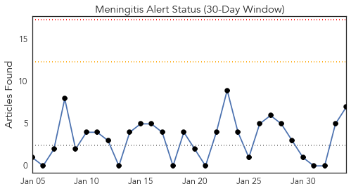
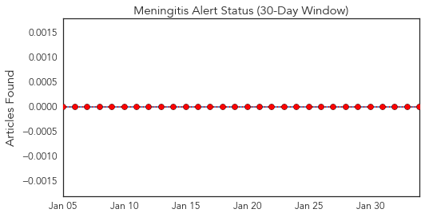
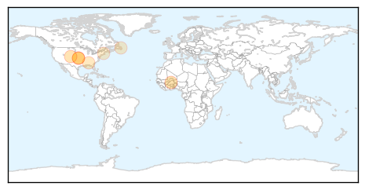
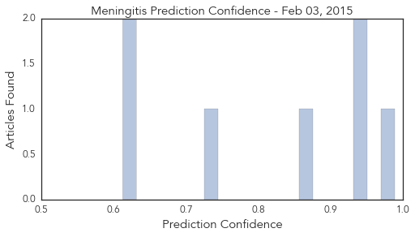

Toggle navigation
Early Warning
Daily Alerts
Meningitis
Feb 03, 2015
Compare to:
-
Dengue Fever
Hemmorhagic Fever
Mold/Fungal Infection
Influenza
Pertussis / Whooping Cough
Middle East Respiratory Syndrome
Cholera
Hepatitis
Chikungunya
Yellow Fever
Bubonic Plague
West Nile Virus
Swine Flu
Ebola
Measles
Unknown
Mumps
30 Day Trends
Web: 0
alerts
, 0
warnings
Twitter: 0
alerts
, 0
warnings
Top Articles:
0.988
Second UO student diagnosed with meningococcemia
0.945
Meningitis kills one person in Bongo District
0.942
Meningitis unpredictable and hard to trace, says expert
0.868
‘Medical mystery’ still stumps doctors amid outbreak
0.728
Seniors need 2 pneumonia vaccines, CDC advisory panel says
0.619
FDA approves Bexsero for use in 10- to 25-year-olds
0.613
Health officials say college student has meningitis
Top Tweets:
No tweets found for Feb 03, 2015
Web/News Articles

Tweets

Article Locations

Article Confidences
